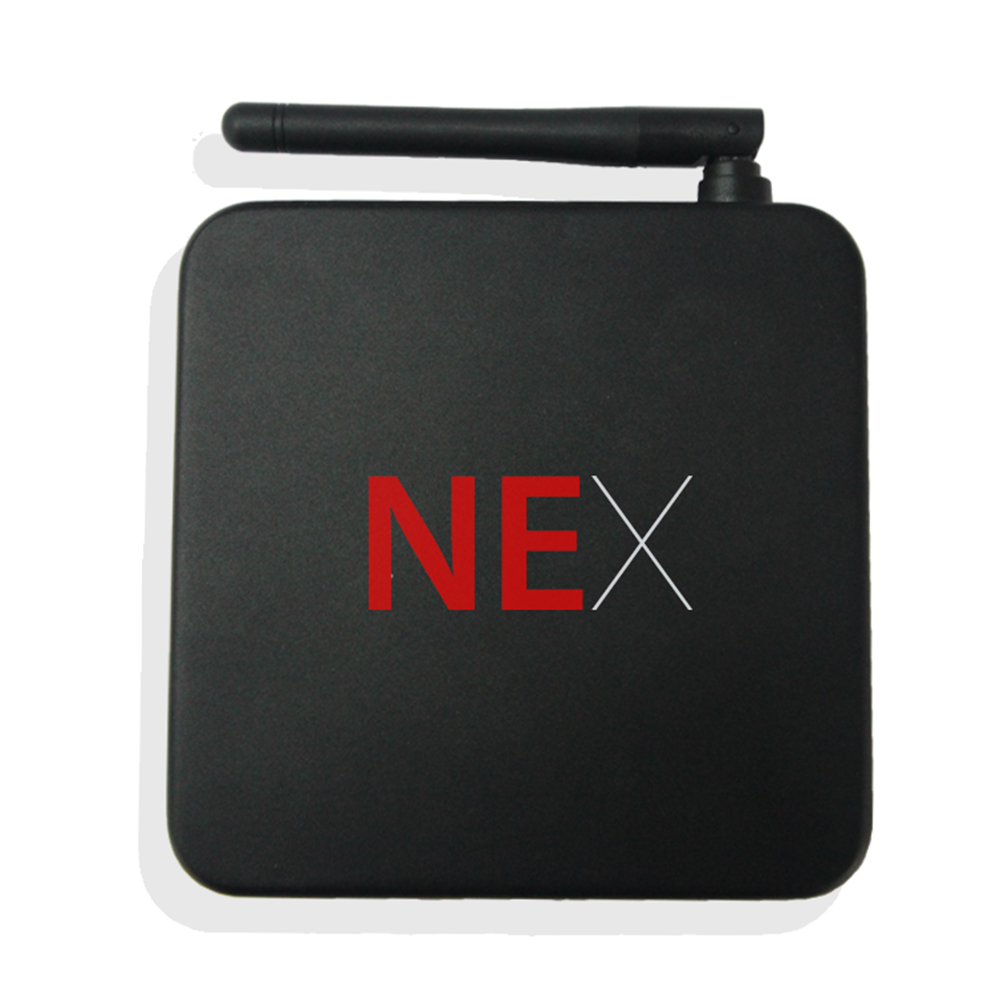
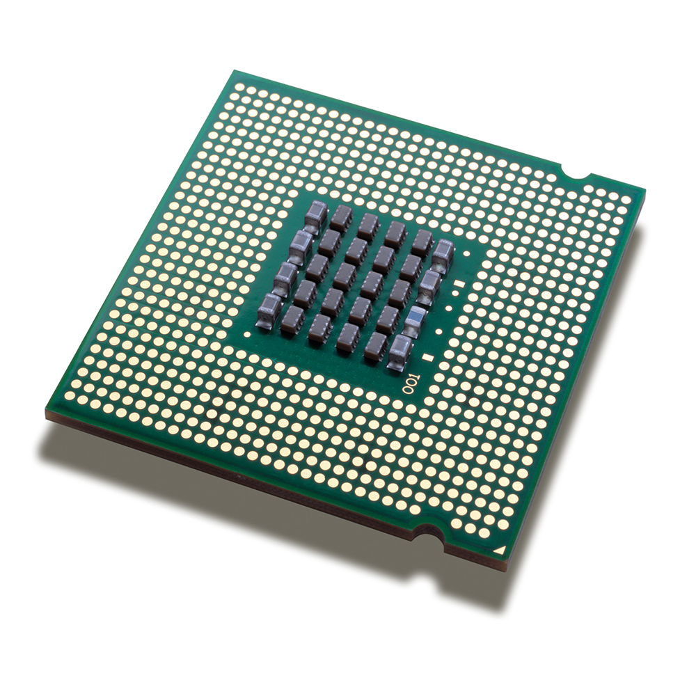

Customizable Colors
I am so happy, my dear friend, so absorbed in the exquisite sense of mere tranquil existence, that I neglect my talents.
Clean Code
A wonderful serenity has taken possession of my entire soul, like these sweet mornings of spring which I enjoy with my heart.

Blog & News
he quick, brown fox jumps over a lazy dog. DJs flock by when MTV ax quiz prog, so absorbed in the exquisite sense of mere
Support 7/7
I am so happy, my dear friend, so absorbed in the exquisite sense of mere tranquil existence, that I neglect my talents.